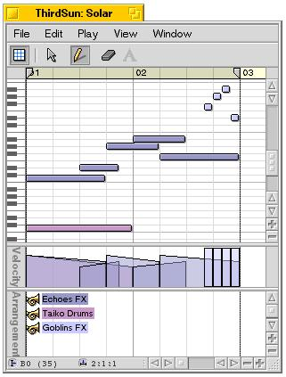

Assembly
This is the main interface for song arrangement. It is used to place parts in sequence.
Part Window
This is the window used to edit the parts. Strips may be added
for velocity, pitch bend etc.

Transport
The Transport window contains the transport buttons (like playback/stop/pause),
using the familiar "tape deck" metaphor you know from many other
applications. There is also a control that lets you set the song's tempo,
and a time position indicator.
Inspector
The Inspector currently has two purposes:
- Adjusting Parameters.
It lets you modify the current selection using the sliders on the left side.
Depending on the type of event that is currently selected in the active window these sliders will have different functions, indicated by their label. Some events may only have one adjustable parameter, others two or three. The adjustments you make here will also be used as defaults for newly-added event - Manage Destinations.
It is used to manage the list of destinations. The dropdown list on the right displays the list of destinations. You can delete them or edit them using the inspector.

Parts
The Parts window shows a list of all parts in the active document. You
can rename, edit, discard and mute parts from this window, using the part's
context-menu.
Grid
The original Music-X was inspired by the "grid snap" feature
found in CAD systems, and in particular used the idea that "grid
offset errors" should be preserved while dragging. This approach
is standard today, but MeV takes a step further by allowing you to define
the grid in a very flexible way. Each measure is conceived as a "structure"
or "scaffolding" upon which musical events are hung, and you
control the geometry of that scaffolding.
The snap size can also be any arbitrary interval - it doesn't have
to be an even number of grid units per measure, although the start of
a measure is always a snap point (the grid "resets" at each
measure).